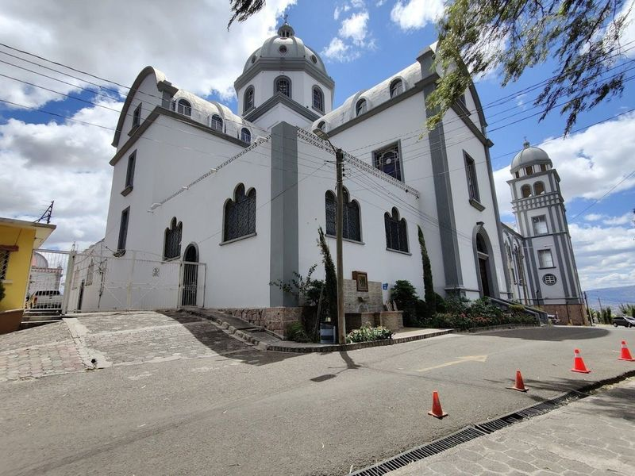
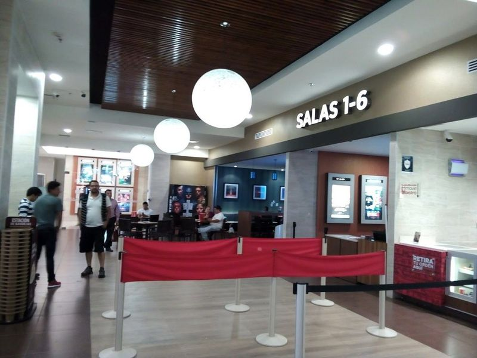
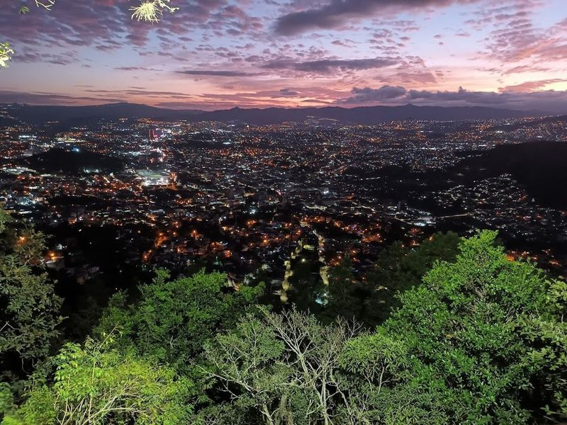
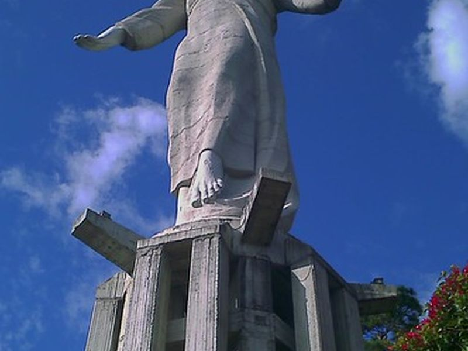
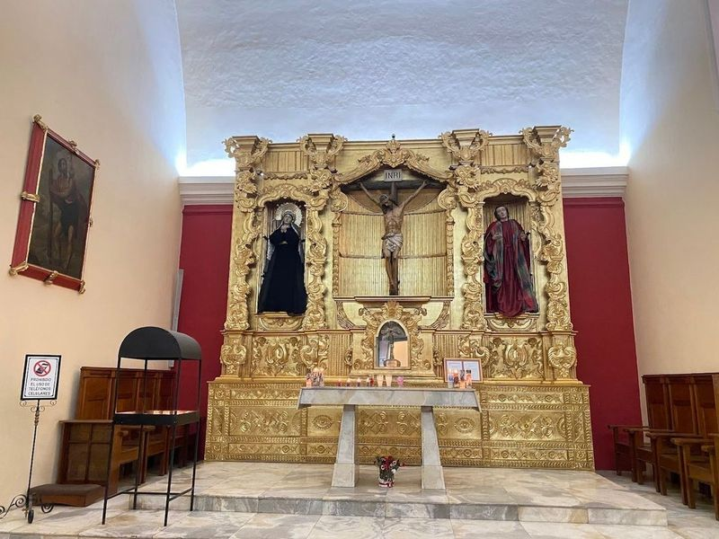
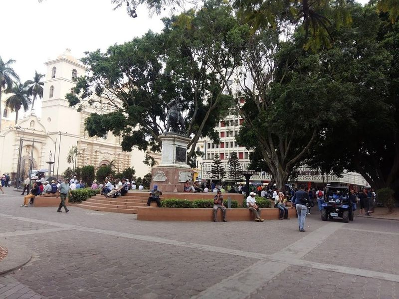
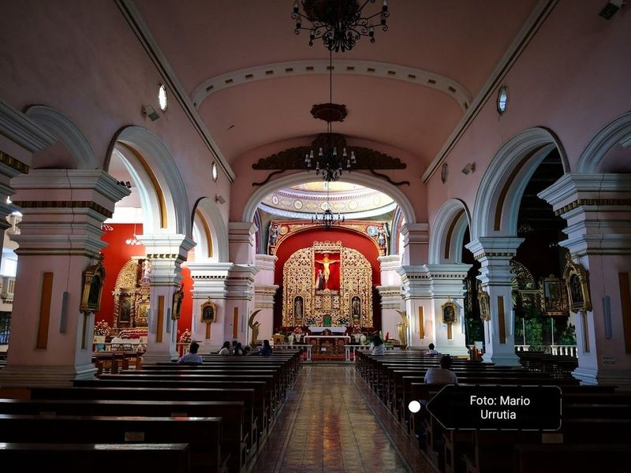
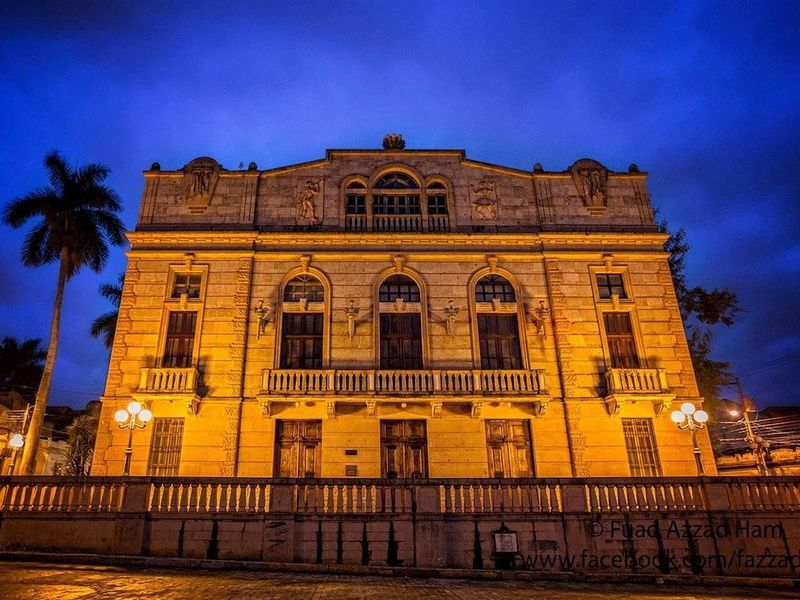
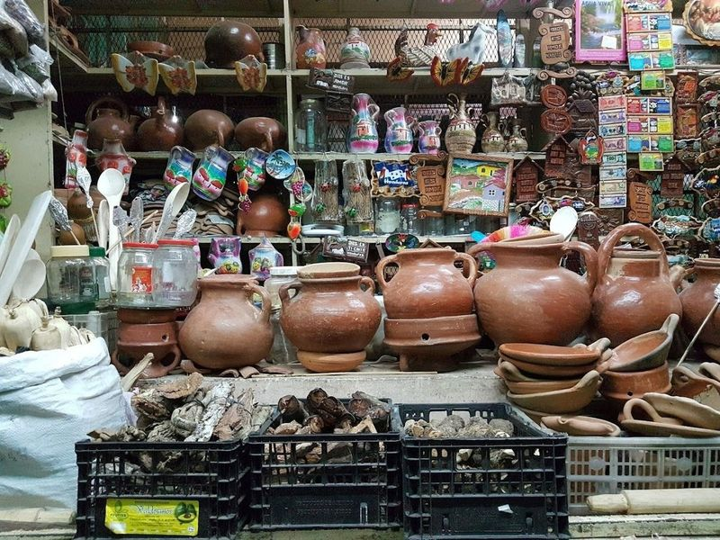

Explore Tegucigalpa
A Brief History
Tegucigalpa developed around silver mines registered by Spanish authorities in 1578 in a mountain basin above the Choluteca River. Cathedral of Saint Michael, colonial plazas, and El Picacho monument viewpoints record how mining wealth, Central American federation politics, and twentieth-century coffee and textile industries shaped Honduras's capital on the Pacific slope of the isthmus.
Attractions Map
Top Sights & Activities

Basílica de Nuestra Señora de Suyapa
The Basílica de Nuestra Señora de Suyapa is a modern Catholic basilica located in Tegucigalpa, Honduras. It was built in the 20th century to honor the Virgin of Suyapa, who is considered the patron saint of Honduras and Central America. The basilica's grand neo-Gothic architecture features beautiful sky-blue stained-glass windows that inspire awe. Despite its impressive appearance, some find it less intimate compared to the smaller church nearby.

Cinemark
If you're in the mood for a laid-back evening, Cinemark is the perfect spot to catch a flick. Nestled within the bustling Multiplaza shopping mall, this cinema showcases Hollywood blockbusters just weeks after their U.S. release. Most films are presented in their original language with Spanish subtitles, while children's movies typically come dubbed.

Parque El Picacho
Parque El Picacho is a must-visit in Tegucigalpa, featuring a statue reminiscent of Christ the Redeemer and small zoos on the hill. The evening offers an amazing view, although ticket prices for the various attractions can be a concern. The park is well-maintained and secure, with food stalls and spaces for celebrations. It's known for its fantastic city views, ziplining, and the Jesus statue at the top.

Cristo del Picacho
The Cristo del Picacho statue crowns El Picacho hill above Tegucigalpa and resembles Rio de Janeiro's Christ the Redeemer at a smaller scale. Completed in 1998, the white figure overlooks the capital and is reached by road or stair paths through Parque Nacional El Picacho. Clear-day views extend across the mountainous Valle de Tegucigalpa.

Metropolitan Zoo Rosy Walther
Metropolitan Zoo Rosy Walther lies within Parque El Picacho and houses Central American species including jaguars, monkeys, and scarlet macaws in hillside enclosures. The zoo is named for a Honduran conservation advocate and combines animal exhibits with picnic areas and walking paths near the Cristo del Picacho monument. It serves families from Tegucigalpa and surrounding towns.

Catedral de San Miguel Arcángel
Nestled at the eastern edge of Plaza Morazan, the Catedral de San Miguel Arcángel stands as a magnificent testament to history and artistry. This historic Catholic church, dedicated to the city's patron saint, has graced its location since 1765. With its dome and intricate sculptures adorning the interior—including a grand altar—visitors are enveloped in an atmosphere rich with spiritual energy.

Parque Central Tegucigalpa
Parque Central Tegucigalpa is a central location in the historic Barrio Abajo neighborhood of Tegucigalpa. It's within walking distance of top sites like Tegucigalpa Central Park and St. Mary of Sorrows Church, making it . The area is known for its plentiful taxis and shopping options, including attractions like the National Museum of Identity.

Iglesia Santa María de los Dolores
Iglesia Santa María de los Dolores is a Baroque Catholic church located in Tegucigalpa, Honduras. Built in the 1700s, this historical landmark features two bell towers, a dome, and impressive art and sculptures. The church's facade is adorned with intricate depictions of the Passion of Christ, including a crowing cock and the rising sun. Inside, visitors can admire an elaborate gold altar dating back to 1742.

Teatro Nacional Manuel Bonilla
Nestled in the heart of Tegucigalpa, the Teatro Nacional Manuel Bonilla stands as a beacon of culture and elegance. Established in 1912, this venue draws inspiration from the Athens Theatre in Paris. Over the years, it has undergone several restorations to maintain its grandeur, with the latest renovation completed in 2007.

Mercado San Isidro quesos Miguelito
If you're looking to dive into the heart of local culture, Mercado San Isidro is an must-visit. This lively market bursts with colors and tantalizing aromas that awaken your senses as you stroll through its bustling stalls. Here, discover a delightful array of fresh fruits, vegetables, meats, and seafood that showcase the region's culinary richness. The atmosphere is electric with street vendors offering handmade crafts alongside aromatic spices that fill the air.